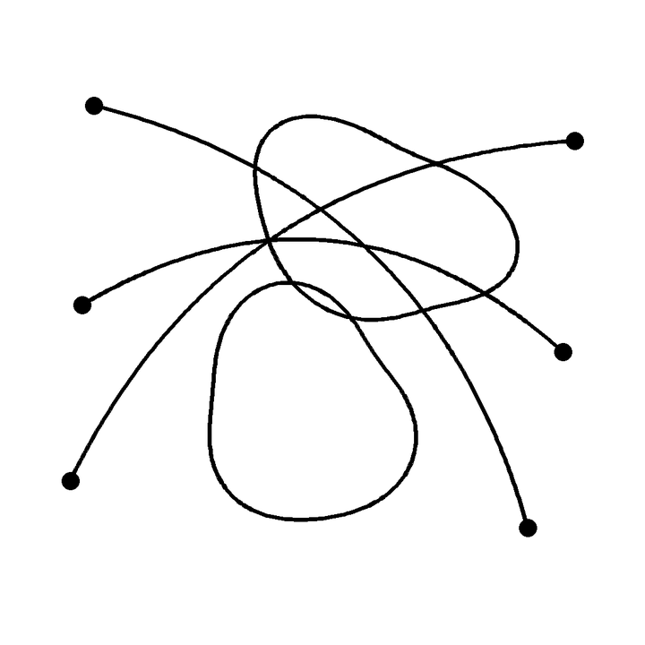
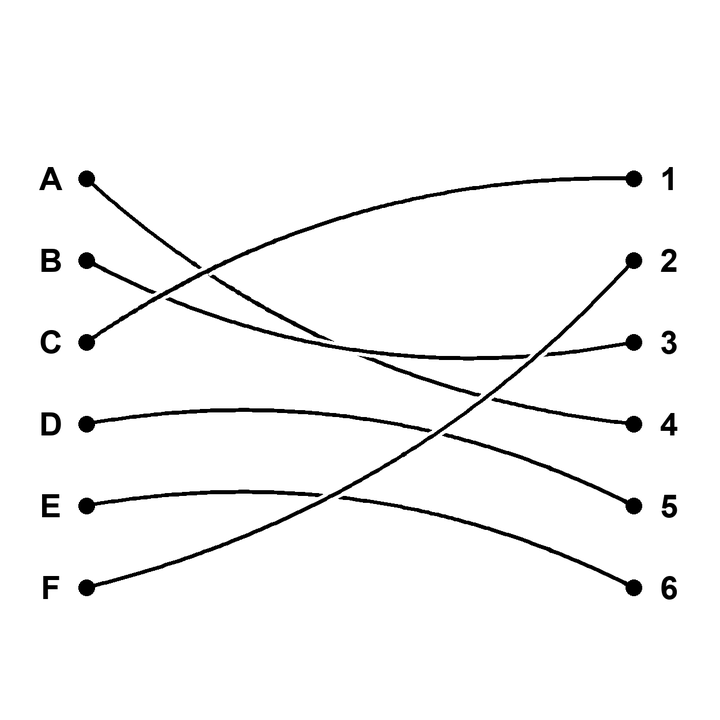
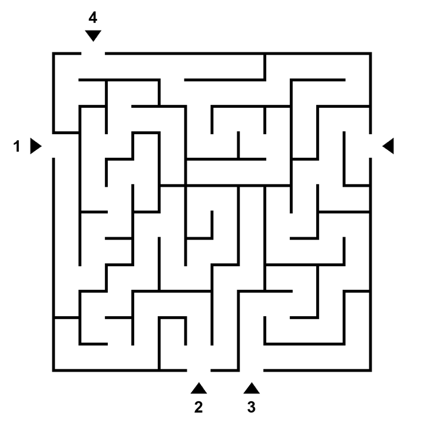
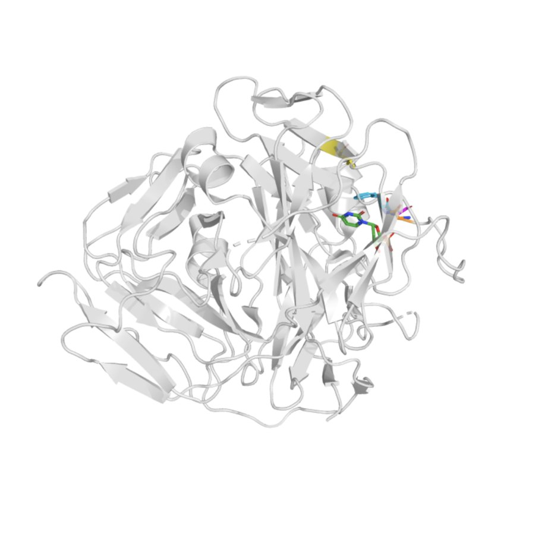
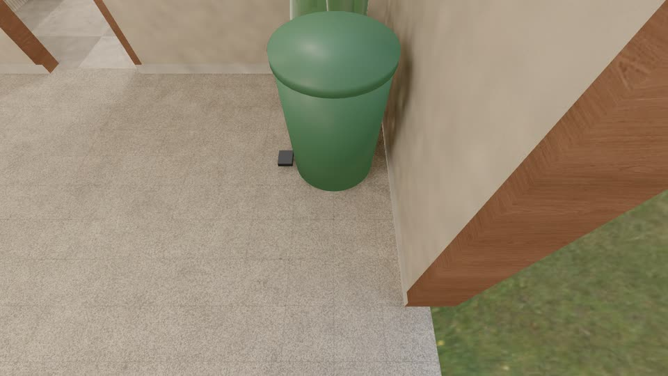

2026.08 — Present至今
Agentic Vision Evaluation
Tencent Hunyuan, Foundation Model Dept.腾讯混元 · 基础模型部
Agentic Vision 方向评测
I build the questions, the judges and the failure analysis for multimodal models: synthetic visual puzzles, scientific 3D tasks, a pipeline that writes grading rubrics, and an operator that finds the first step where an agent went wrong.为多模态大模型造题、造裁判、查失败：合成视觉题、科学三维题、自动写评分标准的链路，以及定位智能体“第一步走偏”的归因算子。
- 2
- closed-loop 3D benchmarks, co-first author项三维空间闭环基准，共同一作
- 300
- EyeBench-HY questions across 12 task types道 EyeBench-HY 题，12 种考法
- 80.2%
- cell agreement of generated rubrics (hand-written: 77.8%)自动 Rubric 逐格一致率（人工 77.8%）
- 93.9%
- machine–human grading agreement机评-人评一致率
01 · Visual benchmark视觉基准
EyeBench-HY: puzzles reverse-engineered from user complaintsEyeBench-HY：从用户吐槽里反推的视觉考题
I read community feedback on vision models, traced it to perception blind spots, and wrote 12 parametric generators that draw a puzzle and compute its answer at the same time. No labels to collect, so no label noise.从社区对视觉模型的吐槽里反推感知盲区，写了 12 个参数化生成器：画图的同时算出答案，不需要人工标注，也就没有标注噪声。







Difficulty tiers hold up难度分档成立
Accuracy of four models over two rounds, 654 calls四个模型两轮跑测，共 654 次调用的正确率
Where models break模型在哪里翻车
Hardest task types; graph degree, odd-one-out, sequences and shortest path were all solved最难的几种考法；节点度数、找异类、序列补全、最短路全部答对
- Sample by ratio按比例出题12 task types × 3 tiers12 种考法 × 3 档难度
- Scripted ground truth脚本生成 GTanswer computed with the image画图时同步算答案
- Batch gate批次门禁every item checked, legible at 448 px逐题检查，缩到 448px 仍可辨认
- pass@1four models screen for hard items多模型筛出高难题
- Re-balance迭代配比dashboard and leaderboard上线看题看板与排行榜
02 · Scientific 3D科学三维 Exploring探索中
Sci3D-Bench: answer by looking, not by reading the fileSci3D-Bench：只能看，不能读文件
300 questions built from real protein structures (RCSB PDB and AlphaFold DB, 7 families) and 65 whole-body CT scans. The source files stay outside the sandbox: the model must rotate, zoom and clip a structure viewer, or scroll through CT slices, to answer. Every answer is checked by two independent programs.基于真实蛋白结构（RCSB PDB 与 AlphaFold DB，7 个题族）和 65 例全身 CT 构建 300 道题。源文件锁在沙箱外，模型只能自己旋转、缩放、剖切结构查看器，或翻看 CT 切面来作答；每道题的答案都由两条独立程序交叉核验。


- 8.7%
- blind baseline, no image不看图盲答的基线
- 44–48%
- all-correct rate of frontier models前沿模型全对率（初测）
- 49–75
- viewer calls per question次查看器调用 / 题
- 38
- blocked attempts to scan the disk for source files次扫盘偷看源文件被拦下
They see the whole, not the detail看得清整体，看不准局部
All-correct rate by protein family, one frontier model, first run某前沿模型在蛋白题上的分题族全对率（初测）
03 · Evaluation engineering评测工程
A rubric pipeline that never sees the answer keyRubric 自动生成链路：不看答案写评分标准
For STEM drawing questions. Instead of an answer key, the generator sees seven model responses to the same question at once: it lists each response’s errors, then writes rules. Every rule must be grounded in at least one of those responses and comes with a ranking of all seven on that rule, so the rubric targets errors that actually occur rather than imagined ones.面向 STEM 作图题。生成模型不看参考答案，而是同时看到同一题的 7 份模型作答：先逐份写错因，再写条款。每条 Rubric 必须在至少一份作答里找到依据，并给出 7 份作答在这一条上的偏序，写出来的标准针对的是真实出现的错误，而不是凭空想象的扣分点。
- 1 · Route路由split sub-questions, 11 drawing types拆小问，归入 11 类作图形态
- 2 · Compare, blind对比式盲产7 responses at once, errors first同时看 7 份作答，先写错因表
- 3 · Ground & rank依据与偏序each rule cites a response and ranks all 7每条标注依据作答，并给出偏序
- 4 · Re-rank check逐条复核a judge re-ranks; reversal sends it back裁判重打偏序，相反即打回
- 5 · Two-judge gate两层裁判门禁misses sent back, up to 2 repairs漏拦打回，最多回修 2 次
A rule goes back to stage 2 if the judge’s ranking reverses the generator’s, or if the rubric passes a response that a rubric-free judge marks wrong. Code checks on count, format and banned words run throughout, and every round logs its feedback and tokens.裁判重打的偏序与生产模型相反，或者按 Rubric 判全过、而不看 Rubric 的裁判判错（漏拦），都会打回第 2 步重写；条数、格式、禁用词的代码检查贯穿全程，每一轮的反馈原文和 token 都有记录。
Closer to human eyes than hand-written rubrics比人工写的 Rubric 更接近人眼
Cell-level agreement with human judgement, 54 questions × 7 models与人眼判定的逐格一致率，54 题 × 7 个模型
Cohen’s κ 0.60 vs 0.54
Fast enough to run on every batch快到每批都能跑
- ~6 min分钟
- per question, runs in parallel单题耗时，可并发
- 4.4 → 1.4
- repair rounds per question after removing an over-strict gate去掉过严门禁后，每题平均回修轮数
- 6
- judge models compared before choosing one类 Judge 模型横评选型
04 · Trajectory attribution轨迹归因
An attribution operator that finds the first wrong stepAgent 归因质检算子：找到第一步走偏的地方
A score says an agent failed; it does not say where. For each low-scoring trajectory the operator names the earliest root cause (type, turn, step, what it did, what it should have done) and backs it with quotes from the trace, which are then checked word for word.分数只告诉你智能体失败了，不告诉你错在哪。算子对每条低分轨迹给出最早的根因（类型、轮次、步号、做了什么、应该怎么做），并附上轨迹原文作为证据，再逐字核对这些引用。
- Low-score traces低分轨迹invalid tasks removed first先剔除无效任务
- Attribute逐条归因root cause, step, evidence主因、步号与证据
- Verify quotes证据核对deterministic, no LLM确定性脚本，不调模型
- Cross-review跨家族复核blind, adversarial, arbitration盲归因 · 对抗审查 · 仲裁
- Patterns → operators聚类成算子fix old ones, spec new ones修旧算子，写新规格
- 9,368
- evidence quotes checked word for word条证据引用逐字核对
- 12%
- not found in the trace, sent back for repair在原轨迹中找不到，打回修复
- 46
- existing operators audited line by line个现有算子逐个读代码审计
- 62
- bad patterns clustered into 52 operator specs类 bad pattern，整理成 52 份算子规格
Environment errors were counted as model errors环境故障被算成了模型失败
An interruption operator was not registered as an environment signal. After the fix, the share of traces flagged as bad dropped from 52.0% to 47.2%.环境中断算子没有注册成环境信号，命中后仍被算作 bad case。修正后，被判为 bad 的轨迹比例从 52.0% 降到 47.2%。
An operator that could never fire一个永远不会命中的算子
The adapter passed an empty tool schema, so invalid-argument checks always returned zero. With the real schema they catch about 3.3% of sampled traces.适配层把工具 schema 写成了空的，参数校验算子全库零命中。传入真实 schema 后，抽样中约 3.3% 的轨迹被抓出漏传必填参数。
The same method, applied to 3D benchmark trajectories, traced the in-house model’s failures to four causes and turned them into training suggestions. See Research.同一套方法用在三维基准的轨迹上，把自研模型的失败归到四类主因，并转成训练侧建议，见主页“研究”。
05 · 3D spatial benchmarks三维空间基准
Two closed-loop 3D benchmarks两项三维空间闭环基准

Space Track
Five first-person worlds that change as the agent acts. Agents describe the change but cannot act on it; a ground-truth map lifts success from 25% to 47%.5 个随行动变化的第一人称世界。智能体能描述变化却无法据此行动，给真值地图后成功率 25% → 47%。

SpaceAct
Lego building and mechanical puzzles from first-person RGB, with no coordinates: 108 solver-verified instances. The bottleneck is estimating 3D geometry from 2D views, not planning.只凭第一人称画面完成乐高搭建与机械解谜，不给坐标，共 108 道求解器验证题。瓶颈不在规划，而在从二维画面估准三维几何。